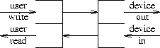
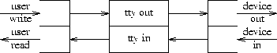
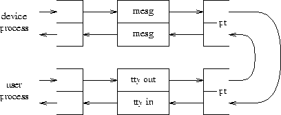

Figure 3. Configuration for network terminals.
The part of the Unix operating system that deals with terminals and other character devices has always been complicated. In recent versions of the system it has become even more so, for two reasons.
The system described here runs on about 20 machines in the Information Sciences Research Division of Bell Laboratories. Although it is being investigated by other parts of Bell Labs, it is not generally available.
This section summarizes the nomenclature, components, and mechanisms of the new I/O system.
A stream is a full-duplex connection between a user's process and a device or pseudo-device. It consists of several linearly connected processing modules, and is analogous to a Shell pipeline, except that data flows in both directions. The modules in a stream communicate almost exclusively by passing messages to their neighbors. Except for some conventional variables used for flow control, modules do not require access to the storage of their neighbors. Moreover, a module provides only one entry point to each neighbor, namely a routine that accepts messages.
At the end of the stream closest to the process is a set of routines that provide the interface to the rest of the system. A user's write and I/O control requests are turned into messages sent to the stream, and read requests take data from the stream and pass it to the user. At the other end of the stream is a device driver module. Here, data arriving from the stream is sent to the device; characters and state transitions detected by the device are composed into messages and sent into the stream towards the user program. Intermediate modules process the messages in various ways.
The two end modules in a stream become connected automatically when the device is opened; intermediate modules are attached dynamically by request of the user's program. Stream processing modules are symmetrical; their read and write interfaces are identical.
Each stream processing module consists of a pair of queues, one for each direction. A queue comprises not only a data queue proper, but also two routines and some status information. One routine is the put procedure, which is called by its neighbor to place messages on the data queue. The other, the service procedure, is scheduled to execute whenever there is work for it to do. The status information includes a pointer to the next queue downstream, various flags, and a pointer to additional state information required by the instantiation of the queue. Queues are allocated in such a way that the routines associated with one half of a stream module may find the queue associated with the other half. (This is used, for example, in generating echos for terminal input.)
The objects passed between queues are blocks obtained from an allocator. Each contains a read pointer, a write pointer, and a limit pointer, which specify respectively the beginning of information being passed, its end, and a bound on the extent to which the write pointer may be increased.
The header of a block specifies its type; the most common blocks contain data. There are also control blocks of various kinds, all with the same form as data blocks and obtained from the same allocator. For example, there are control blocks to introduce delimiters into the data stream, to pass user I/O control requests, and to announce special conditions such as line break and carrier loss on terminal devices.
Although data blocks arrive in discrete units at the processing modules, boundaries between them are semantically insignificant; standard subroutines may try to coalesce adjacent data blocks in the same queue. Control blocks, however, are never coalesced.
Although each queue module behaves in some ways like a separate process, it is not a real process; the system saves no state information for a queue module that is not running. In particular queue processing routines do not block when they cannot proceed, but must explicitly return control. A queue may be enabled by mechanisms described below. When a queue becomes enabled, the system will, as soon as convenient, call its service procedure entry, which removes successive blocks from the associated data queue, processes them, and places them on the next queue by calling its put procedure. When there are no more blocks to process, or when the next queue becomes full, the service procedure returns to the system. Any special state information must be saved explicitly.
Standard routines make enabling of queue modules largely automatic. For example, the routine that puts a block on a queue enables the queue service routine if the queue was empty.
Associated with each queue is a pair of numbers used for flow control. A high-water mark limits the amount of data that may be outstanding in the queue; by convention, modules do not place data on a queue above its limit. A low-water mark is used for scheduling in this way: when a queue has exceeded its high-water mark, a flag is set. Then, when the routine that takes blocks from a data queue notices that this flag is set and that the queue has dropped below the low-water mark, the queue upstream of this one is enabled.
Figure 1 depicts a stream device that has just been opened. The top-level routines, drawn as a pair of half-open rectangles on the left, are invoked by users' read and write calls. The writer routine sends messages to the device driver shown on the right. Data arriving from the device is composed into messages sent to the top-level reader routine, which returns the data to the user process when it executes read.

Figure 1. Configuration after device open.
Figure 2 shows an ordinary terminal connected by an RS-232 line. Here a processing module (the pair of rectangles in the middle) is interposed; it performs the services necessary to make terminals usable, for example echoing, character-erase and line-kill, tab expansion as required, and translation between carriage-return and new-line. It is possible to use one of several terminal handling modules. The standard one provides services like those of the Seventh Edition system [1]; another resembles the Berkeley ``new tty'' driver [2].

Figure 2. Configuration for normal terminal attachment.
The processing modules in a stream are thought of as a stack whose top (shown here on the left) is next to the user program. Thus, to install the terminal processing module after opening a terminal device, the program that makes such connections executes a ``push'' I/O control call naming the relevant stream and the desired processing module. Other primitives pop a module from the stack and determine the name of the topmost module.
Most of the machines using the version of the operating system described here are connected to a network based on the Datakit packet switch [3]. Although there is a variety of host interfaces to the network, most of ours are primitive, and require network protocols to be conducted by the host machine, rather than by a front-end processor. Therefore, when terminals are connected to a host through the network, a setup like that shown in Fig. 3 is used; the terminal processing module is stacked on the network protocol module. Again, there is a choice of protocol modules, both a current standard and an older protocol that is being phased out.
Figure 3. Configuration for network terminals.
A common fourth configuration (not illustrated) is used when the network is used for file transfers or other purposes when terminal processing is not needed. It simply omits the ``tty'' module and uses only the protocol module. Some of our machines, on the other hand, have front-end processors programmed to conduct standard network protocol. Here a connection for remote file transfer will resemble that of Fig. 1, because the protocol is handled outside the operating system; likewise network terminal connections via the front end will be handled as shown in Fig. 2.
Most of the messages between modules contain data. The allocator that dispenses message blocks takes an argument specifying the smallest block its caller is willing to accept. The current allocator maintains an inventory of blocks 4, 16, 64, and 1024 characters long. Modules that allocate blocks choose a size by balancing space loss in block linkage overhead against unused space in the block. For example, the top-level write routine requests either 64- or 1024-character blocks, because such calls usually transmit many characters; the network input routine allocates 16-byte blocks because data arrives in packets of that size. The smallest blocks are used only to carry arguments to the control messages discussed below.
Besides data blocks, there are also several kinds of control messages. The following messages are queued along with data messages, in order to ensure that their effect occurs at the appropriate time.
Associated with each direction of a full-duplex stream module is a queue data structure with the following form (somewhat simplified for exposition).
struct queue {
int flag; /* flag bits */
void (*putp)(); /* put procedure */
void (*servp)(); /* service procedure */
struct queue *next; /* next queue downstream */
struct block *first; /* first data block on queue */
struct block *last; /* last data block on queue */
int hiwater; /* max characters on queue */
int lowater; /* wakeup point as queue drains */
int count; /* characters now on queue */
void *ptr; /* pointer to private storage */
};
The first and last members point to the head and tail of a singly-linked list of data and control blocks that form the queue proper; hiwater and lowater are initialized when the queue is created, and when compared against count, the current size of the queue, determine whether the queue is full and whether it has emptied sufficiently to enable a blocked writer.
The ptr member stores an untyped pointer that may be used by the queue module to keep track of the location of storage private to itself. For example, each instantiation of the terminal processing module maintains a structure containing various mode bits and special characters; it stores a pointer to this structure here. The type of ptr is artificial. It should be a union of pointers to each possible module state structure.
Stream processing modules are written in one of two general styles. In the simpler kind, the queue module acts nearly as a classical coroutine. When it is instantiated, it sets its put procedure putp to a system-supplied default routine, and supplies a service procedure servp. Its upstream module disposes of blocks by calling this module's putp routine, which places the block on this module's queue (by manipulating the first and last pointers.) The standard put procedure also enables the current module; a short time later the current module's service procedure servp is called by the scheduler. In pseudo-code, the outline of a typical service routine is:
service(q) struct queue *q
while (q is not empty and q->next is not full) { get a block from q process message block call q->next->putp to dispose of new or transformed block }
More complicated modules need finer control over scheduling. A good example is terminal input. Here the device module upstream produces characters, usually one at a time, that must be gathered into a line to allow for character erase and kill processing. Therefore the stream input module provides a put procedure to be called by the device driver or other module downstream from it; here is an outline of this routine and its accompanying service procedure:
putproc(q, bp) struct queue *q; struct block *bp
put bp on q echo characters in bp's data if (bp's data contains new-line or carriage return) enable q
service(q) struct queue *q
take data from q until new-line or carriage return, processing erase and kill characters call q->next->putp to hand line to upstream queue call q->next->putp with DELIM message
Although all the drivers for terminal and network devices, and all protocol handlers, were rewritten, only minor changes were required elsewhere in the system. Character devices and a character device switch, as described by Thompson [4], are still present. A pointer in the character device switch structure, if null, causes the system to treat the device as always; this is used for raw disk and tape, for example. If not null, it points to initialization information for the stream device; when a stream device is opened, the queue structure shown in Fig. 1 is created, using this information, and a pointer to the structure naming the stream is saved (in the ``inode table'').
Subsequently, when the user process makes read, write, ioctl, or close calls, presence of a non-null stream pointer directs the system to use a set of stream routines to generate and receive queue messages; these are the ``top-level routines'' referred to previously.
Only a few changes in user-level code are necessary, most because opening a terminal puts it in the ``very raw'' mode shown in Fig. 1. In order to install the terminal-processing handler, it is necessary for programs such as init to execute the appropriate ioctl call.
As previously described, the stream I/O system constitutes a flexible communication path between user processes and devices. With a small addition, it also provides a mechanism for interprocess communication. A special device, the ``pseudo-terminal'' or connects processes. files come in even-odd pairs; data written on the odd member of the pair appears as input for the even member, and vice versa. The idea is not new; it appears in Tenex [5] and its successors, for example. It is analogous to pipes, and especially to named pipes [6]. files differ from traditional pipes in two ways: they are full-duplex, and control information passes through them as well as data. They differ from the usual pseudo-terminal files [2] by not having any of the usual terminal processing mechanisms inherently attached to them; they are pure transmitters of control and data messages. files are adequate for setting up a reasonably general mechanism for explicit process communication, but by themselves are not especially interesting.

Figure 4. Configuration for device simulator.
A special message module provides more intriguing possibilities. In one direction, the message processor takes control and data messages, such as those discussed above, and transforms them into data blocks starting with a header giving the message type, and followed by the message content. In the other direction, it parses similarly-structured data messages and creates the corresponding control blocks. Figure 4 shows a configuration in which a user process communicates through the terminal module, a file pair, and the message module with another user-level process that simulates a device driver. Because files are transparent, and the message module maps bijectively between device-process data and stream control messages, the device simulator may be completely faithful up to details of timing. In particular, user's ioctl requests are sent to the device process and are handled by it, even if they are not understood by the operating system.
The usefulness of this setup is not so much to simulate new devices, but to provide ways for one program to control the environment of another. Pike [6] shows how these mechanisms are used to create multiple virtual terminals on one physical terminal. In another application, inter-machine connections in which a user on one computer logs into another make use of the message module. Here the ioctl requests generated by programs on the remote machine are translated by this module into data messages that can be sent over the network. The local callout program translates them back into terminal control commands.
My intent in rewriting the character I/O system was to improve its structure by separating functions that had been intertwined, and by allowing independent modules to be connected dynamically across well-defined interfaces. I also wanted to make the system faster and smaller. The most difficult part of the project was the design of the interface. It was guided by these decisions:
After considerable churning of details, the model presented here emerged. In general its performance by various measures lives up to hopes.
The improvement in modularity is hard to measure, but seems real; for example, the number of included header files in stream modules drops to about one half of those required by similar routines in the base system (4.1 BSD). Certainly stream modules may be composed more freely than were the ``line disciplines'' of older systems.
The program text size of the version of the operating system described here is about 106 kilobytes on the VAX; the base system was about 130KB. The reduction was achieved by rewriting the various device drivers and protocols and eliminating the Seventh Edition multiplexed files [1], most (though not all) of whose functions are subsumed by other mechanisms. On the other hand, the data space has increased. On a VAX 11/750 configured for 32 users about 32KB are used for storage of the structures for streams, queues, and blocks. The traditional character lists seem to require less; similar systems from Berkeley and AT&T use between 14 and 19KB. The tradeoff of program for data seems desirable.
Proper time comparisons have not been made, because of the difficulty of finding a comparable configuration. On a VAX 11/750, printing a large file on a directly-connected terminal consumes 346 microseconds per character using the system described here; this is about 10 per cent slower than the base system. On the other hand, that system's per-character interrupt routine is coded in assembly language, and the rest of its terminal handler is replete with nonportable interpolated assembly code; the current system is written completely in C. Printing the same file on a terminal connected through a primitive network interface requires 136 microseconds per character, half as much as the older network routines. Pike [7] observes that among the three implementations of Blit connection software, the one based on the stream system is the only one that can download programs at anything approaching line speed through a 19.2 Kbps connection. In general I conclude that the new organization never slows comparable tasks much, and that considerable speed improvements are sometimes possible.
Although the new organization performs well, it has several peculiarities and limitations. Some of them seem inherent, some are fixable, and some are the subject of current work.
I/O control calls turn into messages that require answers before a result can be returned to the user. Sometimes the message ultimately goes to another user-level process that may reply tardily or never. The stream is write-locked until the reply returns, in order to eliminate the need to determine which process gets which reply. A timeout breaks the lock, so there is an unjustified error return if a reply is late, and a long lockup period if one is lost. The problem can be ameliorated by working harder on it, but it typifies the difficulties that turn up when direct calls are replaced by message-passing schemes.
Several oddities appear because time spent in server routines cannot be assigned to any particular user or process. It is impossible, for example, for devices to support privileged ioctl calls, because the device has no idea who generated the message. Accounting and scheduling become less accurate; a short census of several systems showed that between 4 and 8 per cent of non-idle CPU time was being spent in server routines. Finally, the anonymity of server processing most certainly makes it more difficult to measure the performance of the new I/O system.
In its current form the stream I/O system is purely data-driven. That is, data is presented by a user's write call, and passes through to the device; conversely, data appears unbidden from a device and passes to the top level, where it is picked up by read calls. Wherever possible flow control throttles down fast generators of data, but nowhere except at the consumer end of a stream is there knowledge of precisely how much data is desired. Consider a command to execute possibly interactive program on another machine connected by a stream. The simplest such command sets up the connection and invokes the remote program, and then copies characters from its own standard input to the stream, and from the stream to its standard output. The scheme is adequate in practice, but breaks when the user types more than the remote program expects. For example, if the remote program reads no input at all, any typed-ahead characters are sent to the remote system and lost. This demonstrates a problem, but I know of no solution inside the stream I/O mechanism itself; other ideas will have to be applied.
Streams are linear connections; by themselves, they support no notion of multiplexing, fan-in or fan-out. Except at the ends of a stream, each invocation of a module has a unique ``next'' and ``previous'' module. Two locally-important applications of streams testify to the importance of multiplexing: Blit terminal connections, where the multiplexing is done well, though at some performance cost, by a user program, and remote execution of commands over a network, where it is desired, but not now easy, to separate the standard output from error output. It seems likely that a general multiplexing mechanism could help in both cases, but again, I do not yet know how to design it.
Although the current design provides elegant means for controlling the semantics of communication channels already opened, it lacks general ways of establishing channels between processes. The files described above are just fine for Blit layers, and work adequately for handling a few administrator-controlled client-server relationships. (Yes, we have multi-machine mazewar.) Nevertheless, better naming mechanisms are called for.
In spite of these limitations, the stream I/O system works well. Its aim was to improve design rather than to add features, in the belief that with proper design, the features come cheaply. This approach is arduous, but continues to succeed.